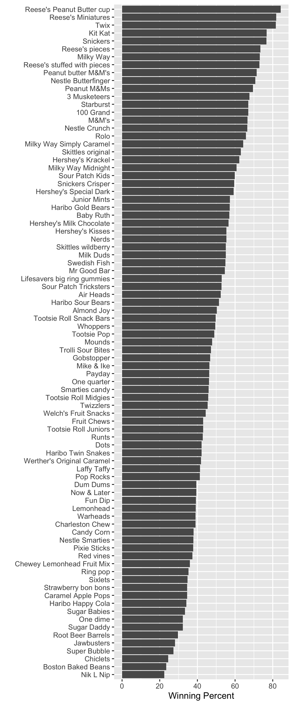
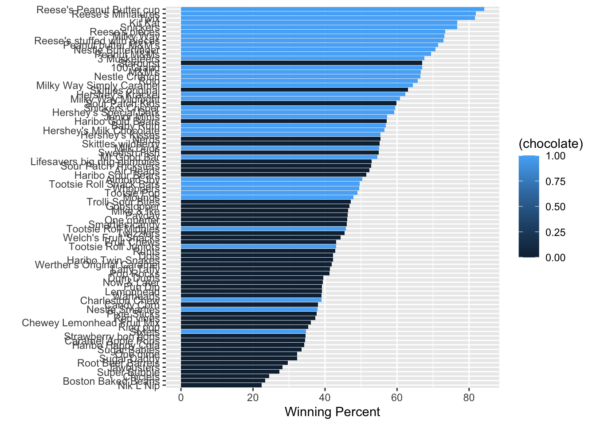

A useful function for a wuick look at a new datasest is found in the skimr package.
skimr::skim(candy)
Data summary
Name
candy
Number of rows
85
Number of columns
12
_______________________
Column type frequency:
numeric
12
________________________
Group variables
None
Variable type: numeric
skim_variable
n_missing
complete_rate
mean
sd
p0
p25
p50
p75
p100
hist
chocolate
0
1
0.44
0.50
0.00
0.00
0.00
1.00
1.00
▇▁▁▁▆
fruity
0
1
0.45
0.50
0.00
0.00
0.00
1.00
1.00
▇▁▁▁▆
caramel
0
1
0.16
0.37
0.00
0.00
0.00
0.00
1.00
▇▁▁▁▂
peanutyalmondy
0
1
0.16
0.37
0.00
0.00
0.00
0.00
1.00
▇▁▁▁▂
nougat
0
1
0.08
0.28
0.00
0.00
0.00
0.00
1.00
▇▁▁▁▁
crispedricewafer
0
1
0.08
0.28
0.00
0.00
0.00
0.00
1.00
▇▁▁▁▁
hard
0
1
0.18
0.38
0.00
0.00
0.00
0.00
1.00
▇▁▁▁▂
bar
0
1
0.25
0.43
0.00
0.00
0.00
0.00
1.00
▇▁▁▁▂
pluribus
0
1
0.52
0.50
0.00
0.00
1.00
1.00
1.00
▇▁▁▁▇
sugarpercent
0
1
0.48
0.28
0.01
0.22
0.47
0.73
0.99
▇▇▇▇▆
pricepercent
0
1
0.47
0.29
0.01
0.26
0.47
0.65
0.98
▇▇▇▇▆
winpercent
0
1
50.32
14.71
22.45
39.14
47.83
59.86
84.18
▃▇▆▅▂
Q. Is there any variable/column that looks to be on a different scale to the majority of the other columns in the dataset?
Yes, the winpercent column is on a different scale/range than all the others. We will need to scale this data before aalysis like PCA to avoid this one variable dominating our analysis.
Q. What do you think a zero and one represent for the candy$chocolate column?
O means the candy does not have chocolate i it, while 1 means that the candy does have chocolate.
Q. Plot a histogram of winpercent values using base R and ggplot
Q. Is the distribution of winpercent values symmetrical?
No
Q. Is the center of the distribution above or below 50%?
From the histogram, the center looks below 50%
summary(candy$winpercent)
Min. 1st Qu. Median Mean 3rd Qu. Max.
22.45 39.14 47.83 50.32 59.86 84.18
Q. On average is chocolate candy higher or lower ranked than fruit candy?
Step 1. Find chocolate candy rows in the dataset Step 2. Get their winpercent values Step 3. Calculate their mean value
Step 4. Find fruity candy rows in the dataset Step 5. Get their winpercent values Step 6. Calculate their mean value
Step 7. Compare the two means you found
# Step 1. Find chocolate candy rows in the datasetchoc.inds <- candy$chocolate ==1choc.candy <- candy[choc.inds, ]#Step 2. Get their `winpercent` valueschoc.win <- choc.candy$winpercent# Step 3. Calculate their mean valuemean(choc.win)
[1] 60.92153
# Step 4. Find fruity candy rows in the datasetfruit.inds <- candy$fruity ==1fruit.candy <- candy[fruit.inds, ]#Step 5. Get their `winpercent` valuesfruit.win <- fruit.candy$winpercent# Step 6. Calculate their mean valuemean(fruit.win)
[1] 44.11974
Q. Is this difference statistically significant?
Let’s use a t-test
t.test(choc.win, fruit.win)
Welch Two Sample t-test
data: choc.win and fruit.win
t = 6.2582, df = 68.882, p-value = 2.871e-08
alternative hypothesis: true difference in means is not equal to 0
95 percent confidence interval:
11.44563 22.15795
sample estimates:
mean of x mean of y
60.92153 44.11974
Overall Candy Rankings
Q. What are the five least liked candy types in this set?
Q. Make a first barplot of candy ranking based on winpercent value
ggplot(candy) +aes(x = winpercent, y =rownames(candy)) +geom_col()
We can make this plot better by rearranging (ordering) the y axis by winpercent so the highest scoring candy is at the topand the lowest is at the bottom
p <-ggplot(candy) +aes(x = winpercent, y =reorder(rownames(candy), winpercent)) +geom_col() +ylab("") +xlab("Winning Percent")
ggsave("my_plot.png", height =12, width =5)
The following markdown syntax is used to insert an image:

Q. Color your bars by “chocolate”
ggplot(candy) +aes(x = winpercent, y =reorder(rownames(candy), winpercent), fill = (chocolate)) +geom_col() +ylab("") +xlab("Winning Percent")

ggsave("my_plot_color.png", height =12, width =5)
I want to color chocolate and fruity a specified color. To do this, we need to define our own custom color vector that has the exact color mappings we want.